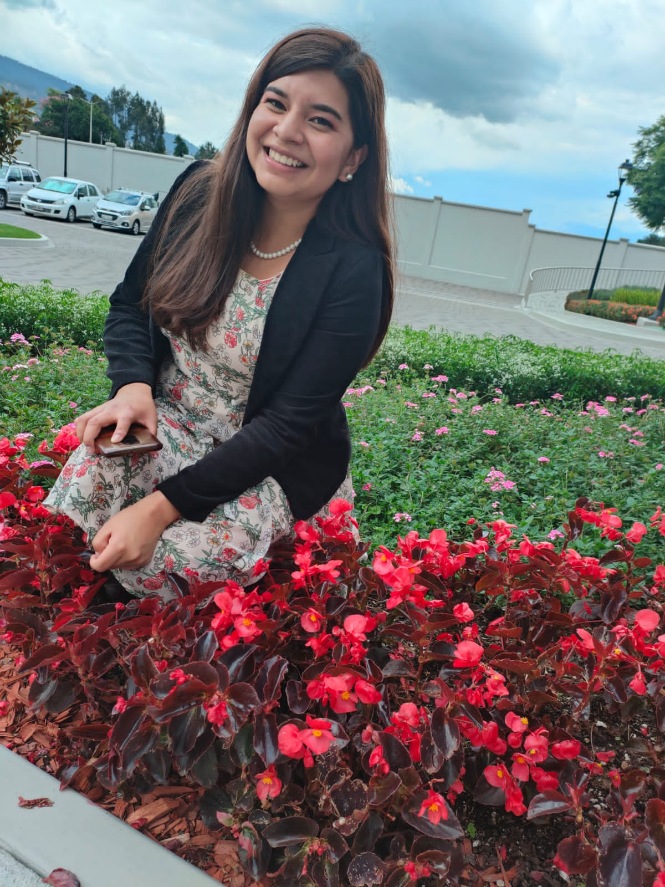

Alisson Doménica Zambrano Sanchez | WDD 130
Hello! My name is Alisson Zambrano and I am from Riobamba, Ecuador.
I really enjoy listening to music from my favorite artist while I do my tasks.
I have two brothers, one older and one younger sister, I like to spend a lot of time with them while I am at home, we also have a dog called "Linda" we adopted her from the street and now she has a lot of time with us.
I love being in this class learning about developing web pages.
I hope to understand all the classes and get good grades.
My favorite singer in the world is Adele,
I really love listening to music but her lyrics create feelings that sometimes you think you let go unnoticed, they are present there waiting to be observed and analyzed.
My favorite food is the famous encebollado that exists in my country, I love the mountains and nature, the beautifully colored flowers and enjoying every corner of my beautiful country.